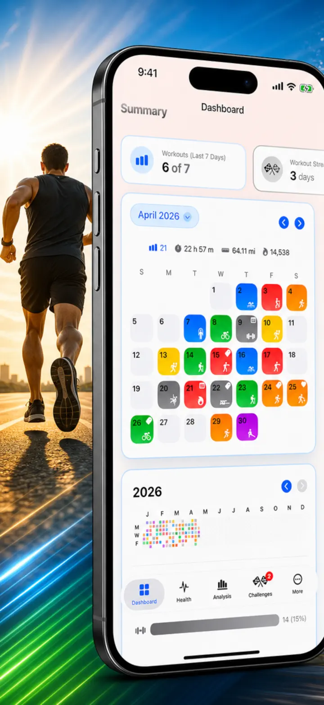
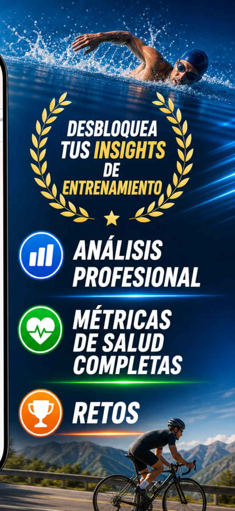
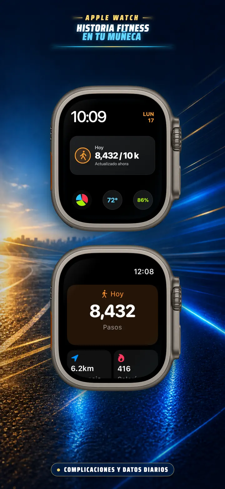
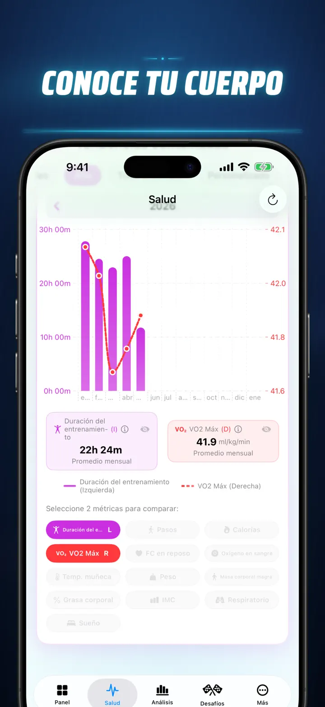
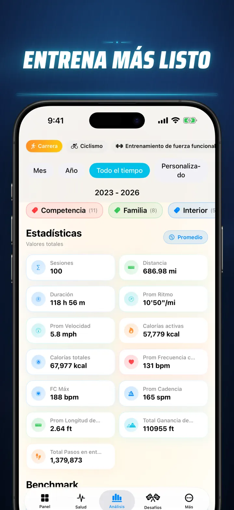
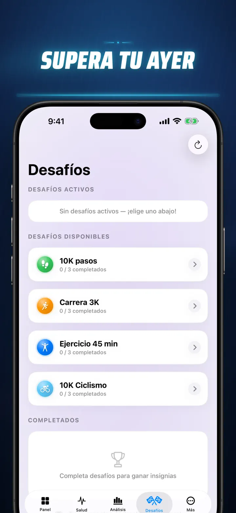
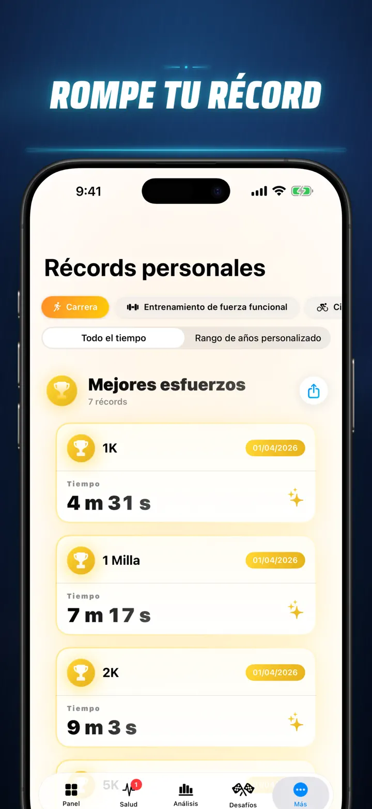
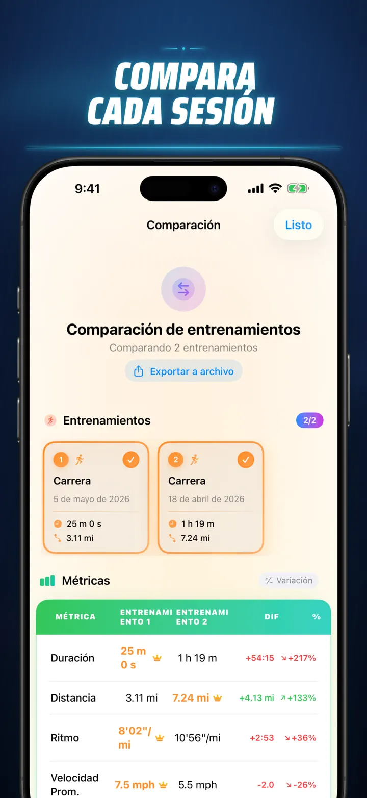
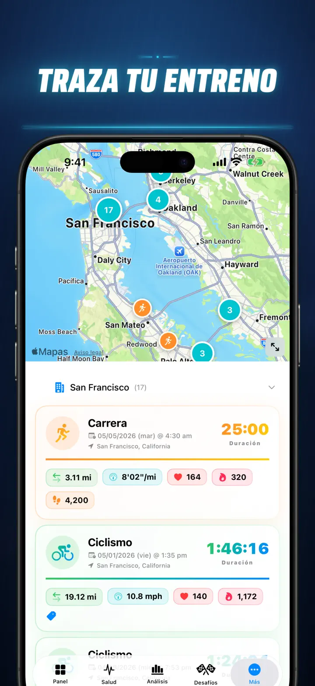
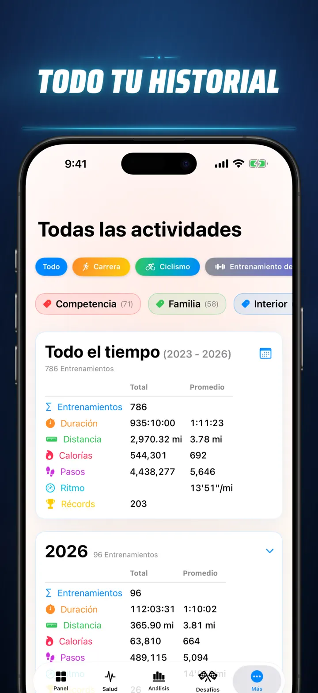

Historia Fitness
Descubre tus datos de fitness
Ya en el Apple Watch: tus pasos de hoy en cualquier carátula, más una pantalla Hoy con distancia, calorías y pisos, directo de Apple Salud.
Descargar en App Store
Acerca de la app
Deja de adivinar. Empieza a saber. Historia Fitness transforma tus datos de Apple Salud en el análisis más potente y detallado disponible en iOS. Sin cuentas. Sin servidores. Solo tu recorrido fitness completo, visualizado.
Ya sea que estés monitoreando las fases de tu sueño, analizando la cadencia al correr o persiguiendo un récord en maratón, este es el panel todo-en-uno que tu esfuerzo merece.
Funciona con cualquier dispositivo o app que se sincronice con Apple Salud: Apple Watch, Garmin, Polar, Suunto, Zwift y más.
ANÁLISIS DE NIVEL PROFESIONAL
- Gráficos de tendencia y referencia: usa diagramas de caja y bigotes para ver la mediana, cuartiles y valores atípicos de cada tipo de deporte.
- Desgloses detallados: filtra tu historial por hora del día, rangos de distancia, duración, intervalos de ritmo, ganancia de elevación, cadencia y longitud de zancada.
- Clasifica todo: con un solo toque, clasifica las métricas de hoy (distancia, ritmo, FC, etc.) contra todo tu historial. Descubre al instante si lograste un rendimiento "Top 15%".
- Gráfico de contribución: un mapa de calor estilo GitHub de todo tu historial de entrenamientos. Gíralo para ver estadísticas diarias detalladas.
DETALLES DE ENTRENAMIENTO REIMAGINADOS
- Mapas inteligentes: colorea tus rutas al aire libre por velocidad, elevación o zonas de frecuencia cardíaca. (Incluye corrección de mapa de China).
- Análisis profundo de splits: consulta splits por kilómetro o milla con ritmo, elevación, FC y cadencia para cada vuelta.
- Zonas de frecuencia cardíaca: visualiza el tiempo en zonas personalizadas 1–5 basadas en tu edad y FC en reposo.
- Contexto enriquecido: agrega fotos, notas con formato, calificaciones de esfuerzo (1–10) y etiquetas personalizadas a cada entrenamiento.
CENTRO DE MANDO DE SALUD COMPLETO
- Todo lo que mide tu Apple Watch, visualizado en un solo lugar con tendencias diarias, semanales y anuales:
- Salud cardiovascular: frecuencia cardíaca en reposo, VO2 Max (ajustado por edad), oxígeno en sangre y frecuencia respiratoria.
- Composición corporal: peso, % de grasa corporal, masa corporal magra e IMC con indicadores de tendencia.
- Actividad y recuperación: pasos (con desglose por hora), calorías activas vs. basales y desviaciones de temperatura de muñeca.
- Seguimiento avanzado del sueño: etapas profunda, ligera, REM y despierto visualizadas noche a noche.
- Superposiciones de correlación: superpón varias métricas de salud para ver cómo tu sueño afecta tu frecuencia cardíaca o cómo tu peso impacta tu VO2 Max.
COMPARA Y COMPITE
- Comparación de entrenamientos: selecciona hasta 10 entrenamientos para compararlos lado a lado. ¡Observa los porcentajes de variación (ej. "+1.5% más rápido") para cada métrica, por split!
- Exportación de comparación: ¿quieres analizar con otras herramientas? ¡Exporta tu comparación de entrenamientos!
- Récords personales: seguimiento automático para 1K, 5K, 10K, media maratón, maratón y distancias personalizadas. Gana trofeos de oro, plata y bronce.
- Línea de tiempo: un feed cronológico de cada hito, récord y entrenamiento que hayas completado.
TUS DATOS, EN TODAS PARTES
- Mapa global: ve cada lugar donde has entrenado en un mapa mundial interactivo con agrupación.
- Exportación potente: exporta todo tu historial (o rangos personalizados) a CSV o JSON. Incluye datos completos de splits, métricas corporales y metadatos.
- Sincronización iCloud: tus favoritos, etiquetas, notas y calificaciones se sincronizan al instante en todos tus dispositivos.
- Privacidad primero: sin servidores ocultos. Tus datos viven en tu dispositivo y en tu iCloud privado.
- Tu sudor cuenta una historia. Es hora de leerla. Descarga Historia Fitness hoy.
¡Descarga Historia Fitness y desbloquea todo el potencial de tus datos!
Aviso de Privacidad: https://masawata.net/privacy-policy.html Términos del Servicio: https://www.apple.com/legal/internet-services/itunes/dev/stdeula/
Capturas de pantalla









Historia Fitness
Ya en el Apple Watch: tus pasos de hoy en cualquier carátula, más una pantalla Hoy con distancia, calorías y pisos, directo de Apple Salud.
Descargar en App Store